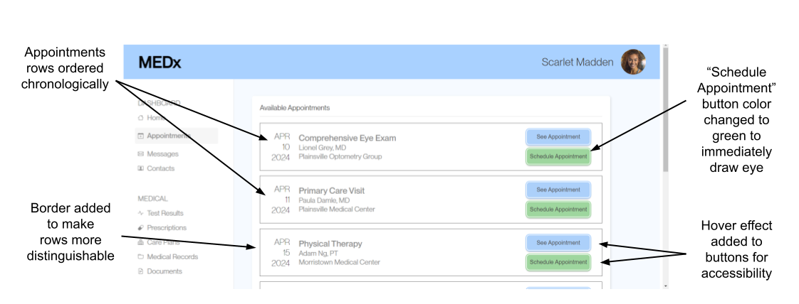

Objective:
The objective of the A/B testing project was to experiment with different versions of a website and use A/B testing to find out which version is "better."
How do we measure "better"?
We want to create a smoother, more likable user experience, so we are trying to find the version that performs "better" in terms of user satisfaction and engagement. I choose key metrics to observe and test to evaluate which version was "better."
Metrics
- Time on Page - Time spent on page to complete the task.
- Number of Clicks - Number of clicks on the page.
- If Misclicked - A boolean value representing if a user clicked a button not relevant to the task.
Webpage Version A
I tested on a doctor's office webpage. We are trying to design this webpage to make it easy to book an appointment.
The original version of the webpage has some usability issues: the light blue buttons are hard to see and the appointment rows are not ordered chronologically. Both these issues can make it difficult for the user to book and appointment.
Webpage Version B
This version fixes some of the usability issues and makes other small changes to the webpage. But is it "better?" Let's find out!